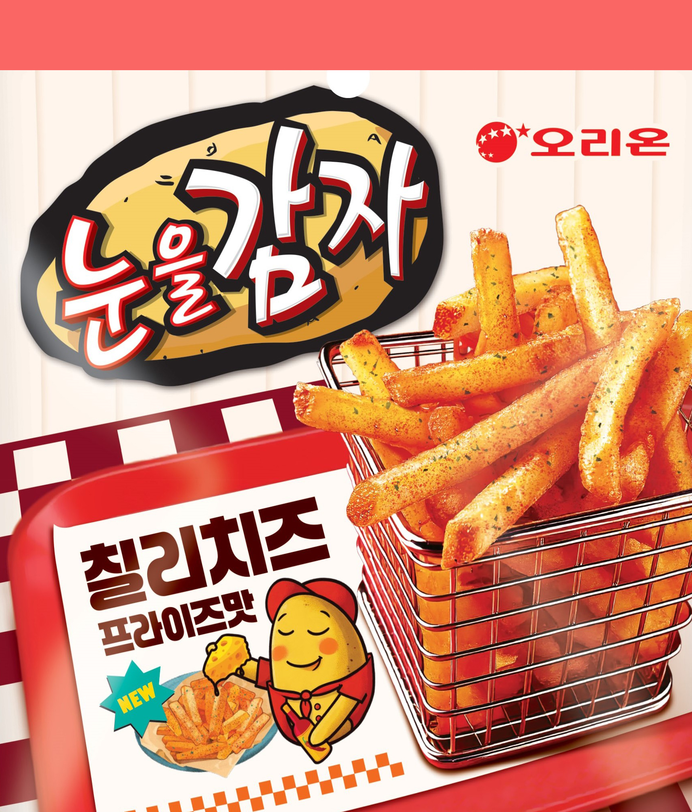
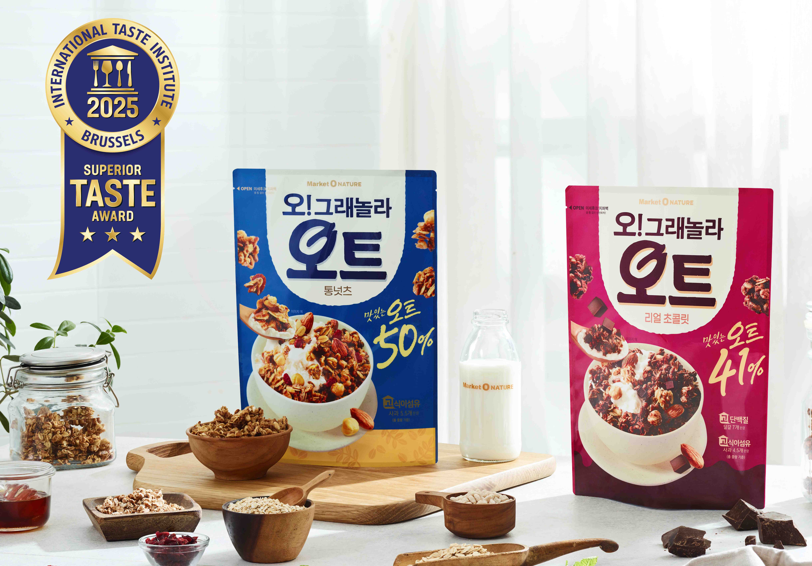

오리온 뉴스

칠리···
눈을감자 칠리치즈 프라이즈맛은 생감자스틱에 칠리 양념과 치즈 가루를 더해 매콤짭짤한 맛이 특징이다. 오독오독 씹히는 눈을감자 특유의 식감과의 조화도 일품이다. ···

“메이···
메이드 인 코리아 ‘마켓오네이처 오!그래놀라’, 세계가 인정했다. 오리온(대표이사 이승준)은 식사 대용식 브랜드 ‘마켓오네이처’의 오트 특화 제품 오!그래놀라 오트 ‘통넛츠’, ‘리얼초콜릿’ 2종이 ···

“한 끼(30g)에 방울토마토 2개
오리온(대표이사 이승준)은 식사대용식 브랜드 ‘마켓오네이처’의 신제품 ‘오!그래놀라 저당 통보리’를 출시했다고 16일 밝혔다. 오!그래놀라 저당 통보리는 한 끼 섭취량(30g) 기준 당 함량을 방울토마토 2개 분량인 1g대로 낮춰 부담 없이 즐길 수 있는 제품...
쉽게 찾아보세요!
공식제품판매처
빠른 배송, 정품 보장! 공식 판매 사이트에서 바로 만나보세요.